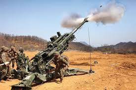
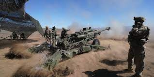
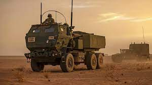
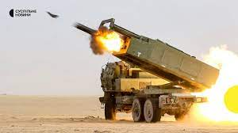
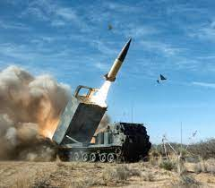
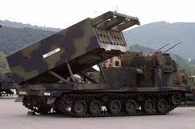
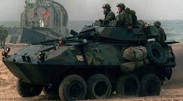
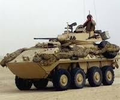

Man Used Chariots, Stirrups, Animals, Railways, and Other Seemingly Harmless Things to Improve Killing Techniques
all eras, war has been a complex and costly undertaking. The outcome and features of the confrontation of organized
groups of armed people to resolve the issue of power, territory and resources have always depended on what means and skills they possessed.
Therefore, the development of technology, as well as the level of social organization and knowledge about the world around us, has always
gone side by side with the war and directly influenced its appearance.
Abrams
U.S. main battle tank, mass-produced since 1980. It is in service with the US Army and Marine Corps, as well as the armed forces of Egypt,
Australia, Poland, Morocco and a number of Middle Eastern states. Named after General Creighton Abrams. M1 "Abrams" is currently one of
the heaviest tanks, its combat weight exceeded 62 tons. It laid the foundation for the use of a number of innovative solutions, including
a computer fire control system and separate storage of ammunition using ejection panels.The development of the new tank,
which later received the designation XM-1, began immediately after the XM802 program was closed at the end of 1971.
To reduce technological risks, it was decided to design a new tank according to the classical scheme with a crew of 4 and with a high ballistics gun as the main armament.
The 105 mm M68 rifled gun, the British 110 mm rifled gun and the German 120 mm smoothbore gun were considered for the role of the latter.
The variant with the 110 mm cannon was immediately rejected as having no significant advantage over the 105 mm. The option with a 120 mm cannon was considered risky,
so it was decided to leave the 105 mm M68 cannon with the possibility of subsequent replacement with a 120 mm one. The American air-cooled diesel AVCR-1100 (planned for the MBT-70),
the German water-cooled diesel DB1500 (later designated MB873) and the American gas turbine engine (GTE) AGT-1500 were considered as the power plant.
The power of all engines was 1500 liters. With. Initially, the military preferred diesel, but in the late 1970s, their sympathies shifted towards gas turbine engines.
According to the original terms of reference, the armor protection of the tank was supposed to withstand (in the forward sector of fire ± 30 °)
the 115-mm armor-piercing feathered sub-caliber projectile of the Soviet U-5TS cannon from a distance of 800 m. The planned price of the tank was supposed to be within
400 thousand dollars per 1972 prices, and the combat weight is 45 tons. It soon became clear that with these restrictions it was not possible to provide the required level of protection,
so the performance limit was increased to 500 thousand dollars and 55 tons, respectively.
During the prototyping stage, both companies were guided by the following main requirements:
maximum combat weight 18 t
maximum machine width of 3.96 m to meet the requirements of European rail transport, i.e. the width of the railway platform
significant improvement in all areas compared to the M60
ground forces standards in terms of operational reliability, readiness and service life must be observed
the maximum cost of the tank is 107 thousand dollars
Within these limits, the two companies could implement their own ideas about protection,
mobility and transportability to meet the set requirements.
According to the chairman of the OKNSh, Admiral Thomas Moorer,
preliminary projects for consideration by the US Army Armored Directorate on May 8, 1973 were presented by the corporations General Motors,
Chrysler and Ford [10]. FMC Corporation took a detour and offered a licensed copy of the American-made Leopard-2 tank
On June 28 of the same year, a contract was signed with ROC contractors to build prototypes for joint testing [12].
In early July 1976, representatives of General Motors and Chrysler visited England to get acquainted with the
development of Chobham composite armor. As a result of the visit, both firms made changes to their designs in order to adapt the new armor.
Another significant change in the design was the result of experience gained during the 1973 Arab-Israeli war. It was decided to abandon the
25-mm twin automatic gun M242 Bushmaster in favor of a 7.62-mm machine gun, and use the freed volume to increase the ammunition load of the
main gun.
Artillery
M777 is a 155 mm towed howitzer. Used by US,
Australian, Canadian, Indian, Saudi Arabian and Ukrainian ground forces. The first combat use took place in the war in Afghanistan (2001-2021).
In the spring of 1987, the armaments division of Vickers Shipbuilding and Engineering (VSEL) developed a preliminary design for the UFH ultralight
field howitzer. In September 1987, the US Army authorized the construction of two prototypes for testing. Since federal law prohibits the US Army
from purchasing foreign-made weapons, Vickers teamed up with Textron to build these weapons in the US.Prototypes built, named LW155, were brought
to the US for testing and evaluation in late 1989. In 1997, according to the results of the official competition for a light towed howitzer,
which was supposed to replace the existing 155-mm towed howitzers M198 (in addition to the LW155, the light towed howitzer of the Royal Ordnance
design also took part in the competition), LW155 was declared the winner. Following this decision, the US Army officially designated the LW155 as the XM777.
During testing of the XM777 in 1998 under conditions close to actual operation, serious problems were identified with metal fatigue, instability during firing,
and recoil damage. These problems continued to plague the XM777 (and later the M777) for many years. Some have never been completely eliminated.
In 1999, VSEL was acquired by BAE Systems and Textron withdrew from the XM777 program, leaving BAE without a U.S. subcontractor to manufacture the howitzer
for more than a year. By September 2000, BAE was able to subcontract several smaller companies to manufacture this howitzer, each of which was to produce different
M777 units.Carriage was to be manufactured by HydroMill Inc, beds and coulters by Major Tool and Machining Inc, loading chute by Rock Island Arsenal,
hoists by Wegmann, optical fire control system by Seiler Instruments and Mfg, and titanium alloys by RTI International Metals Inc.In 2003,
tests began on a new modification of the M777 - M777A1. The M777A1 differed from the base model by having an on-board computer, GPS,
inertial navigation, radio, and three displays: gun commander, gunner, and gunner's assistant. In the same year, the M777A1 conducted test firing
of the Excalibur projectile for the first time. However, production copies of the M777A1 could not use Excalibur.
Operational testing with the US Marine Corps, during which four serial howitzers fired about 12,000 artillery rounds,
was completed in December 2004. In April 2005, BAE Systems received a contract worth US$834 million for the full-scale production of 495 M777A1 howitzers and the modernization
of already delivered to the customer M777 to the level of M777A1[4][5] A total of 650 M777A1 howitzers were produced. In December 2005, the first four M777 howitzers were
delivered by the USMC to the Canadian Army under a Foreign Military Sales (FMS) contract.[7] The systems were deployed in Afghanistan in February 2006 and almost immediately
took part in the fighting near Kandahar, which was the first combat use of the M777.In June 2006, BAE Systems presented at Eurosatory a self-propelled version of the M777 howitzer,
the M777 Portee, which was mounted on a purpose-built 86 Supacat vehicle. However, the M777 Portee did not go into mass production.
HIMARS
multiple launch rocket system on a wheeled chassis.
The M142 HIMARS was created on the basis of a three-axle ("five-ton")
wheeled chassis of the US Army FMTV (Family of Medium Tactical Vehicles - a family of medium tactical vehicles), can carry six MLRS rockets or one ATACMS operational-tactical
ballistic missile. HIMARS is interchangeable with the M270A1 MLRS, carrying half of its ammunition load.The M142 HIMARS system is air transportable on a C-130 aircraft and manufactured
by BAE Systems Mobility & Protection Systems (formerly Armor Holdings, Inc.). The rocket part is manufactured by Lockheed Martin.The development of the M142 HIMARS first became known in 1994 [4].
In 2002, the US Marine Corps agreed with the US Army to acquire 40 HIMARS systems. Their deployment began in 2005. In July 2007, Marines from Fox Battery, 2nd Battalion,
14th Marine Regiment were deployed to the Iraqi province of Al Anbar. This is the first Marine Corps unit to use HIMARS in combat.In September 2011, Singapore adopted HIMARS into service with its army. The troops received 18 HIMARS launchers, 9 five-ton FMTV chassis and
containers with XM31 missiles (GMLRS, Guided MLRS - equipped with an inertial control system with GPS) with a unitary high-explosive warhead, as well as related support and communications equipment and services.
This order does not include M26 missiles or other types of MLRS unguided rockets.
ATACMS
solid-propellant tactical ground-to-earth ballistic missile manufactured by the American
company Lockheed Martin. Has a range of up to 300 km [3]. Its various equipment options are indexed by the US Department of Defense MGM-140, MGM-164 and MGM-168. The ATACMS missile in the transport
and launch container has the M39 index.ATACMS missile launchers are M270 MLRS and M142 HIMARS multiple rocket launchers. The ATACMS launch canister has a six-circle patterned cover,
similar to the standard MLRS missile cover.
Development began in 1982 when the US Department of Defense merged the Army's CSWS (Corps Support Weapon System, literally "Weapon Support System" program, launched in 1980 as a successor to the MGM-52 Lance)
and the US Air Force's CSW (eng. . Conventional Standoff Weapon) into the JTACMS program (Eng. Joint TACMS, literally Unified Tactical Missile System).
rocket - Lockheed Martin Vought Systems Corporation (Vought Systems), Dallas, Texas; Harrison City, Texas
Thrust vector control unit - B.F. Goodrich Aerospace, Cedar Knolls, New Jersey
inertial navigation system - Honeywell, Inc., Clearwater, Florida; Minneapolis, Minnesota
Transport and launch container - Talley Defense Systems, Mesa, Arizona (Block II / IIA)
antenna device - Ball Aerospace, Broomfield, Colorado (Block II / IIA); Ball Telecommunications, Westminster, CO (Block II/IIA)
Switching Unit - TRAK Microvawe Co., Tampa, FL (Block II/IIA)
MGM-140A / ATACMS Block I modification missiles were mass-produced for the US Army from the early nineties until 1997;
MGM-140B / Block IA (with cluster warhead) - from 1998 to 2001.
From 1988 to 2014 more than 3,700 ATACMS missiles of all modifications were produced at the El Paso plant; of these, about 600 were spent by US troops in the course of hostilities (including 479 during hostilities in
Iraq in 2003).
Light Armored Vehicles
LAV-25
Canadian combat reconnaissance vehicle manufactured by General Dynamics Land Systems - Canada [K 1] for the US Marine Corps, which is a further development of the Swiss MOWAG Piranha I armored vehicle
The first LAV-25s entered service with the US Marine Corps in 1983.The LAV-25 armored personnel carrier was created as part of a competition held in the early 1980s jointly by the US Army and Marine Corps and a specially
created LAV control (Light Armored Vehicle - lightly armored vehicle)In September 1981, three contracts for the development of
prototypes were awarded to Canadian, American and British bidders. Competition for the Canadian project "Pirana" with a 6 6 and then 8 8 wheel arrangement of General Motors of Canada[en] in Ottawa, Ontario (which in
turn was a modified version of the eponymous model of the Swiss company MOWAG[en]), in the qualifying round were elongated copies of multi-purpose four-wheeled vehicles V-150 and V-160 American corporation Cadillac Gage
Corporation[en] in Warren, Michigan (branch of Ex-Cell-O Corp.), as well as tracked vehicles from the CVR (T) family of the British company Alvis Company Ltd, Coventry, West Midlands, with a new engine and transmission.
In November 1981, candidates submitted prototypes for accelerated testing at the Marine Corps Test Range Twentynine Palms, California. For control firing, the vehicles were equipped with 25-mm rapid-fire M242 Bushmaster
automatic cannons (in the “light assault vehicle” version) or Belgian-made 90-mm Cockerill Mk.3 cannons (“heavy-armed combat vehicle” option for the army or “assault gun” for the marines). A feature of accelerated testing,
in contrast to the standard practice of conducting competitive selection, was that the army and marine crews selected for testing were completely unfamiliar with the test vehicles and learned to operate the vehicles on the
go (as a rule, this is preceded by two or three months of training under the guidance factory testers, but in this case they got by with a brief briefing).
The body of the armored personnel carrier LAV-25 of the original version, welded from thin (5 - 10 mm) sheets of armored steel
of high hardness (according to military specifications MIL-A-46100) provides bulletproof and anti-fragmentation protection.
In front of the hull on the right is the engine-transmission compartment (MTO), on the left is the control compartment with the driver's seat. The gunner and commander of the vehicle are placed in a circular rotation turret.
In the aft part of the hull there is a troop compartment that can accommodate 6 fully equipped infantrymen.
Small arms and small arms
Global distribution of small arms
In 2018, Small Arms Survey reported that there are over one billion small arms distributed globally, of which 857 million (about 85 percent) are in civilian hands.[13][14] U.S. civilians alone account for 393 million
(about 46 percent) of the worldwide total of civilian held firearms.[14] This amounts to "120.5 firearms for every 100 residents."[14] The world's armed forces control about 133 million (about 13 percent) of the global
total of small arms, of which over 43 percent belongs to two countries – the Russian Federation (30.3 million) and China (27.5 million).[13] Law enforcement agencies control about 23 million (about 2 percent) of the global total of small arms.
 U.S. main battle tank, mass-produced since 1980. It is in service with the US Army and Marine Corps, as well as the armed forces of Egypt,
Australia, Poland, Morocco and a number of Middle Eastern states. Named after General Creighton Abrams. M1 "Abrams" is currently one of
the heaviest tanks, its combat weight exceeded 62 tons. It laid the foundation for the use of a number of innovative solutions, including
a computer fire control system and separate storage of ammunition using ejection panels.
U.S. main battle tank, mass-produced since 1980. It is in service with the US Army and Marine Corps, as well as the armed forces of Egypt,
Australia, Poland, Morocco and a number of Middle Eastern states. Named after General Creighton Abrams. M1 "Abrams" is currently one of
the heaviest tanks, its combat weight exceeded 62 tons. It laid the foundation for the use of a number of innovative solutions, including
a computer fire control system and separate storage of ammunition using ejection panels. The development of the new tank,
which later received the designation XM-1, began immediately after the XM802 program was closed at the end of 1971.
To reduce technological risks, it was decided to design a new tank according to the classical scheme with a crew of 4 and with a high ballistics gun as the main armament.
The 105 mm M68 rifled gun, the British 110 mm rifled gun and the German 120 mm smoothbore gun were considered for the role of the latter.
The variant with the 110 mm cannon was immediately rejected as having no significant advantage over the 105 mm. The option with a 120 mm cannon was considered risky,
so it was decided to leave the 105 mm M68 cannon with the possibility of subsequent replacement with a 120 mm one. The American air-cooled diesel AVCR-1100 (planned for the MBT-70),
the German water-cooled diesel DB1500 (later designated MB873) and the American gas turbine engine (GTE) AGT-1500 were considered as the power plant.
The power of all engines was 1500 liters. With. Initially, the military preferred diesel, but in the late 1970s, their sympathies shifted towards gas turbine engines.
According to the original terms of reference, the armor protection of the tank was supposed to withstand (in the forward sector of fire ± 30 °)
the 115-mm armor-piercing feathered sub-caliber projectile of the Soviet U-5TS cannon from a distance of 800 m. The planned price of the tank was supposed to be within
400 thousand dollars per 1972 prices, and the combat weight is 45 tons. It soon became clear that with these restrictions it was not possible to provide the required level of protection,
so the performance limit was increased to 500 thousand dollars and 55 tons, respectively.
The development of the new tank,
which later received the designation XM-1, began immediately after the XM802 program was closed at the end of 1971.
To reduce technological risks, it was decided to design a new tank according to the classical scheme with a crew of 4 and with a high ballistics gun as the main armament.
The 105 mm M68 rifled gun, the British 110 mm rifled gun and the German 120 mm smoothbore gun were considered for the role of the latter.
The variant with the 110 mm cannon was immediately rejected as having no significant advantage over the 105 mm. The option with a 120 mm cannon was considered risky,
so it was decided to leave the 105 mm M68 cannon with the possibility of subsequent replacement with a 120 mm one. The American air-cooled diesel AVCR-1100 (planned for the MBT-70),
the German water-cooled diesel DB1500 (later designated MB873) and the American gas turbine engine (GTE) AGT-1500 were considered as the power plant.
The power of all engines was 1500 liters. With. Initially, the military preferred diesel, but in the late 1970s, their sympathies shifted towards gas turbine engines.
According to the original terms of reference, the armor protection of the tank was supposed to withstand (in the forward sector of fire ± 30 °)
the 115-mm armor-piercing feathered sub-caliber projectile of the Soviet U-5TS cannon from a distance of 800 m. The planned price of the tank was supposed to be within
400 thousand dollars per 1972 prices, and the combat weight is 45 tons. It soon became clear that with these restrictions it was not possible to provide the required level of protection,
so the performance limit was increased to 500 thousand dollars and 55 tons, respectively.